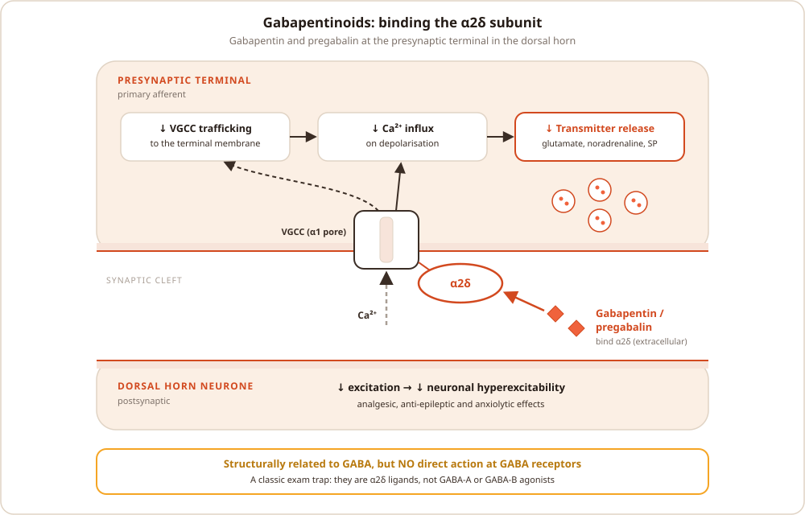

The intervertebral disc, placebo and nocebo, gabapentinoids and MRI physics
Four 30-minute basic science questions
BSQ 1Intervertebral disc: anatomy, function and degeneration
BSQ 2Placebo and nocebo effects
BSQ 3Gabapentinoids: mechanism and pharmacology
BSQ 4MRI physics and safety
Session feedback
Structure scored the marks. Answers that moved in a clear order (definition, then mechanism, then clinical relevance) did well even where details were missing. Keep practising out loud, and arrange extra peer sessions between the led ones.
BSQ 1The intervertebral disc
Q1.1Structure
23 discs (none at C0–C1 or C1–C2), making up roughly a quarter of the height of the vertebral column
Nucleus pulposus: gelatinous centre, about 80% water in the young. Proteoglycans (mainly aggrecan) trap water, held in a loose network of type II collagen. Notochordal cells in childhood are replaced by sparse chondrocyte-like cells
Annulus fibrosus: 15 to 25 concentric lamellae. Type I collagen in the outer annulus, more type II towards the nucleus. Fibres run at about 30° to the horizontal and alternate direction in adjacent lamellae, so the annulus resists torsion and tension
Cartilaginous endplates: thin hyaline cartilage (about 1 mm) between disc and vertebral body. The main route for nutrient diffusion, and the weakest point under axial load
Q1.2Function
Load transmission: the pressurised nucleus behaves hydrostatically, converting axial load into hoop stress in the annulus and spreading load evenly across the endplates
Movement: allows flexion, extension, lateral flexion and rotation, working as a three-joint complex with the two facet joints
Intradiscal pressure varies with posture (Nachemson): lowest lying supine, higher sitting than standing, highest when sitting and leaning forward or lifting
Diurnal variation: discs lose fluid under load during the day and rehydrate overnight, so height falls by 1 to 2 cm over the day
Q1.3Blood supply and nutrition
The adult disc is the largest avascular structure in the body. Only the outer annulus has blood vessels, from branches of the segmental arteries
The nucleus and inner annulus rely on diffusion, mostly through the endplates from capillary beds in the vertebral body, and from the outer annulus
The centre of the nucleus is hypoxic and acidic (lactate from anaerobic glycolysis), and cell density is low, so repair capacity is poor
Endplate calcification (age, smoking, vascular disease) reduces diffusion and is an early step towards degeneration
Q1.4Nerve supply
In the healthy disc only the outer third of the annulus is innervated
Posterior: the sinuvertebral nerve (recurrent meningeal nerve), formed from the ventral ramus and a grey ramus communicans. It re-enters the spinal canal through the intervertebral foramen and also supplies the posterior longitudinal ligament and ventral dura
Lateral and anterior: branches of the grey rami communicantes and the sympathetic trunk
Endplates: the basivertebral nerve, the target of basivertebral nerve ablation for vertebrogenic (Modic-associated) pain
In degeneration nociceptive fibres (substance P, driven by NGF) grow with blood vessels into the inner annulus and nucleus. This is the basis of discogenic pain
Q1.5Degeneration
Biochemistry: loss of proteoglycan and water, a switch from type II to type I collagen in the nucleus, matrix breakdown by MMPs and ADAMTS enzymes, inflammatory cytokines (IL-1β, TNF-α), and cell senescence
Risk factors:genetics (the largest contributor in twin studies), age, smoking, abnormal loading, endplate injury and obesity
Stage
What happens
1. Dehydration
Proteoglycan loss, so the nucleus holds less water and loses its hydrostatic function. Disc height falls. MRI shows a "black disc" (loss of T2 signal)
2. Fissuring
Annular tears (radial, concentric or rim). Radial fissures let nuclear material track outwards, causing internal disc disruption or herniation
3. Neovascularisation
Granulation tissue carrying blood vessels and nociceptive nerve fibres grows into the fissures, producing discogenic pain. It may appear as a high-intensity zone on T2
4. Sclerosis
Fibrosis and disc collapse, endplate sclerosis, osteophytes and Modic change. Load shifts to the facet joints, and the segment eventually stiffens (the stabilisation phase of the Kirkaldy-Willis cascade)
Imaging grades:Pfirrmann grades I to V describe disc degeneration on T2. Modic changes describe the adjacent endplate and marrow: type 1 is oedema or inflammation (T1 dark, T2 bright), type 2 is fatty replacement (T1 and T2 bright), and type 3 is sclerosis (T1 and T2 dark)
BSQ 2Placebo and nocebo effects
Q2.1Definitions
Placebo: an inert substance or sham procedure with no specific therapeutic action for the condition being treated
Placebo effect: the real improvement produced by the context of treatment (expectation, conditioning, the therapeutic relationship), not by the treatment's specific action
Placebo response in a trial is wider. It also includes natural history, regression to the mean and other non-specific effects, which is why a no-treatment arm is needed to measure the true placebo effect
Nocebo: negative expectations produce adverse effects or worsen symptoms. Example: in the SAMSON trial (statin intolerance), about 90% of the symptoms reported on statins also occurred on placebo
Q2.2Mechanisms
Psychological: expectation (often from verbal suggestion), classical conditioning from previous treatment, social learning, and the clinician–patient relationship
Endogenous opioids: placebo analgesia is reversed by naloxone (Levine, 1978). It engages the descending modulatory pathway: prefrontal cortex and rostral anterior cingulate cortex, then periaqueductal grey and rostral ventromedial medulla, then dorsal horn
Non-opioid pathways:endocannabinoids (placebo analgesia conditioned with an NSAID is blocked by the CB1 antagonist rimonabant), and the dopaminergic reward system (nucleus accumbens activity tracks expected benefit)
Imaging: reduced activity in pain-processing regions (thalamus, insula, ACC) and even at spinal cord level, so the change is in nociceptive processing, not just in how pain is reported
Nocebo: mediated by cholecystokinin (blocked by proglumide) and activation of the HPA axis, with reduced dopamine and opioid activity
Q2.3What makes the effect larger
Strong expectation and positive framing, previous good experience, and a warm, confident clinician
More invasive or elaborate interventions (injection more than tablet; sham surgery the largest), and also cost, brand and the number of tablets
Open–hidden paradigm: the same dose of morphine works less well when given covertly, showing that expectation adds to the drug's effect
The placebo component is lost when prefrontal function is impaired, for example in Alzheimer's disease
Q2.4Relevance to pain practice, and ethics
Trials: placebo responses in pain trials are large and appear to be rising, so sham-controlled trials matter for interventions. Vertebroplasty, for example, was no better than a sham procedure in blinded RCTs
Some procedures, such as trigger point injections, may work largely through non-specific (placebo) effects rather than a specific analgesic action
Ethics: giving a placebo deceptively breaches honesty and consent, so it should not be used in routine practice. Open-label placebo (the patient is told it is inert) has shown benefit in small trials in chronic low back pain
Use it ethically: empathic communication, positive and honest framing, and building realistic expectation of benefit from genuine treatments
Limit nocebo: explain side effects honestly but in balance, and avoid language such as "this will really hurt"
BSQ 3Gabapentinoids
Q3.1Mechanism of action
Structural analogues of GABA, but they do not act at GABA receptors
They bind the α2δ-1 subunit of presynaptic voltage-gated calcium channels (mainly N- and P/Q-type). This reduces trafficking of the channels to the presynaptic membrane, so less calcium enters
Reduced calcium entry means less release of glutamate, substance P and CGRP in the dorsal horn
α2δ-1 is upregulated in the dorsal root ganglion after nerve injury, which helps explain the selectivity for neuropathic pain
They also enhance descending noradrenergic inhibition (locus coeruleus, spinal α2-adrenoceptors), and may block thrombospondin-driven formation of new excitatory synapses

Gabapentinoids at the presynaptic terminal in the dorsal horn.
Q3.2Pharmacokinetics: gabapentin versus pregabalin
Gabapentin
Pregabalin
Absorption
Saturable L-amino acid transporter in the proximal small bowel, so absorption is non-linear: bioavailability about 60% at 900 mg/day, falling to about 33% at 3600 mg/day
Linear, bioavailability ≥90% at all doses
Peak level
2 to 3 hours
About 1 hour
Potency
Lower
Higher binding affinity for α2δ, so lower doses are needed
Distribution
Protein binding negligible; crosses the blood–brain barrier by the L-amino acid transporter
Metabolism
Essentially none, so no CYP450 interactions
Elimination
Excreted unchanged by the kidney, half-life about 5 to 7 hours. Reduce the dose in renal impairment (by creatinine clearance); both are removed by haemodialysis
Dosing
Three times daily, slow titration
Twice daily, faster titration
Q3.3Indications (UK)
Gabapentin: focal seizures, and peripheral neuropathic pain (for example post-herpetic neuralgia, painful diabetic neuropathy)
Pregabalin: peripheral and central neuropathic pain, adjunct for focal seizures, and generalised anxiety disorder
NICE CG173: amitriptyline, duloxetine, gabapentin or pregabalin as first-line options for neuropathic pain (carbamazepine for trigeminal neuralgia). NNT for 50% relief is about 6 to 8 (Finnerup, 2015)
Where they don't work: pregabalin was no better than placebo for sciatica (PRECISE, 2017), and NICE NG193 advises against gabapentinoids for chronic primary pain
Q3.4Adverse effects and cautions
Common: dizziness, drowsiness, ataxia, peripheral oedema, weight gain, blurred vision and cognitive slowing. These are worse in older people
Respiratory depression, especially combined with opioids, in older people, in respiratory disease and in renal impairment. Co-prescription with opioids raises the risk of opioid-related death (MHRA, 2017)
Misuse and dependence: euphoric effects, particularly in people who use opioids. Both have been Schedule 3 controlled drugs (Class C) since April 2019
Pregnancy: pregabalin may slightly increase the risk of major congenital malformations (MHRA, 2022). Effective contraception is advised
Suicidal ideation (an antiepileptic class warning), and caution with pregabalin in heart failure
The product licences specify tapering over at least 1 week, but in practice the taper is usually slower and guided by symptoms
Suggested maximum rate (PHE/NHS England prescribing advice): gabapentin, reduce the daily dose by no more than 300 mg every 4 days; pregabalin, by no more than 50 to 100 mg a week
BSQ 4MRI physics and safety
Q4.1How the image is made
Hydrogen nuclei (protons, mainly in water and fat) have spin and act as small magnets
In a strong static field (B0, usually 1.5 or 3 tesla) a small excess align with the field, giving net magnetisation. The protons precess at the Larmor frequency, ω = γB0 (42.58 MHz per tesla for hydrogen, about 64 MHz at 1.5 T)
A radiofrequency (RF) pulse at the Larmor frequency causes resonance. It tips the net magnetisation into the transverse plane and brings the protons into phase
When the pulse stops, the protons relax and emit a signal that the receiver coil detects:
T1 (spin–lattice): recovery of longitudinal magnetisation; T1 is the time to 63% recovery. Fat has a short T1
T2 (spin–spin): loss of phase coherence, so transverse signal decays; T2 is the time to fall to 37%. Water has a long T2
Gradient coils vary the field across the patient, which allows slice selection and frequency and phase encoding. The data fill k-space and a Fourier transform turns it into the image. Rapid gradient switching makes the noise
Weighting: T1-weighted uses a short TR and short TE; T2-weighted uses a long TR and long TE; proton density uses a long TR and short TE
Tissue
T1-weighted
T2-weighted
Note
Water, CSF, oedema
Dark
Bright
STIR suppresses fat, so oedema stands out (fracture, Modic 1)
Fat, marrow
Bright
Bright (fast spin echo)
Best anatomy on T1
Healthy disc nucleus
Intermediate
Bright
Dark on T2 when degenerate
Cortical bone, air
Dark
Dark
Few mobile protons; CT is better for bone
Gadolinium
Bright
Little effect
Shortens T1. Post-operative scar enhances; recurrent disc enhances only at the rim
Q4.2Advantages and limitations
Advantages:no ionising radiation, excellent soft-tissue contrast (disc, nerve roots, cord, marrow), and images in any plane
Limitations: slow and noisy, claustrophobia, movement artefact, cost and access, poor cortical bone detail, artefact from metal, and device contraindications
Q4.3Hazards
Source
Hazard
Static field (B0)
Projectile (missile) effect on ferromagnetic objects. Movement or torque on implants and foreign bodies (aneurysm clips, intraocular metal). The field is always on, even when the scanner is not scanning
Switched gradients
Acoustic noise above 100 dB, so ear protection is mandatory. Peripheral nerve stimulation. Induced currents in leads and implants
RF field
Tissue heating, limited by the specific absorption rate (SAR, W/kg). Burns from conductive loops (ECG leads, cables), tattoos and implanted leads
Cryogens
Quench: liquid helium boils off rapidly. If venting fails there is a risk of asphyxia and cold injury
Contrast
Gadolinium: nephrogenic systemic fibrosis in severe renal impairment (eGFR under 30), deposition in the brain, and rare allergy. Avoid in pregnancy unless essential
Q4.4Safety management
Controlled access to the MR environment, with a safety screening questionnaire for every patient and staff member. Take an orbit X-ray if there is a history of metal in the eye
Equipment labels:MR Safe (no hazard in any MR environment), MR Conditional (safe only under specified conditions such as field strength, SAR and body region), and MR Unsafe
Anaesthesia and monitoring: MR-conditional anaesthetic machine and monitors, long circuits and lines, fibre-optic or wireless monitoring, no cable loops, and a plan to evacuate the patient from the scanner in an emergency
Q4.5Relevance to pain medicine: implanted devices
Spinal cord stimulators are MR Conditional only within the manufacturer's conditions (full-body or head-only, field strength, SAR). Switch the device to MRI mode and check lead impedance before the scan. A fractured or high-impedance lead can heat (see session 2, Q3.6)
Intrathecal drug pumps: the magnetic field can stall the pump motor, so drug delivery stops during the scan. Interrogate the pump afterwards to confirm it has restarted, and watch for withdrawal if delivery is interrupted
Imaging for back pain: NICE NG59 advises against routine imaging in non-specialist settings. Consider MRI in a specialist setting only if the result is likely to change management, such as before an intervention or when red flags are present